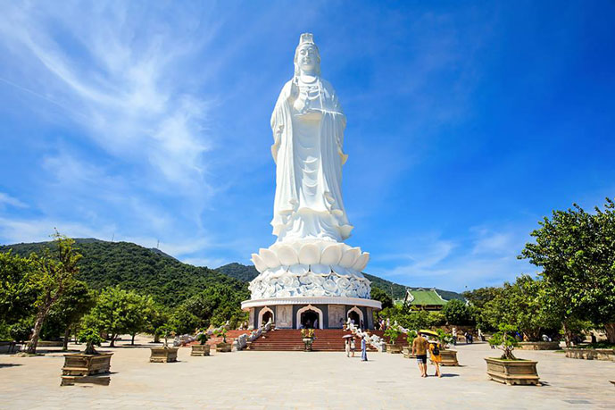
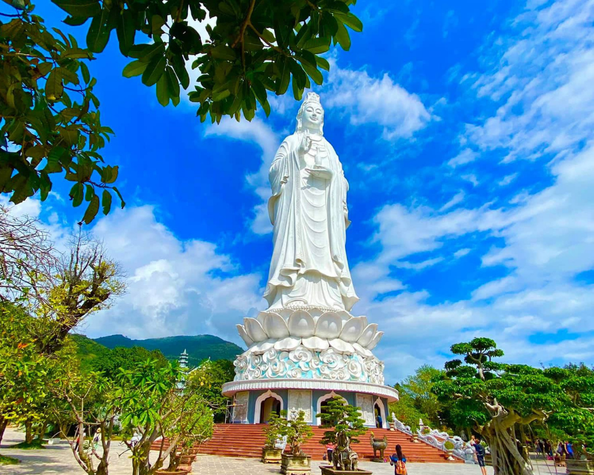
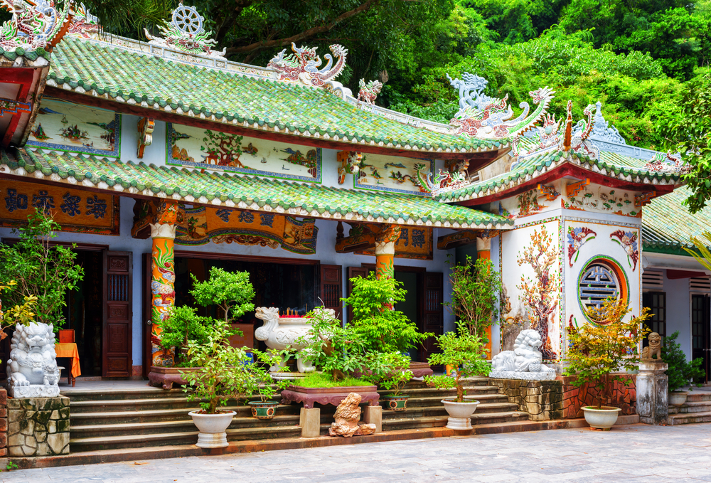
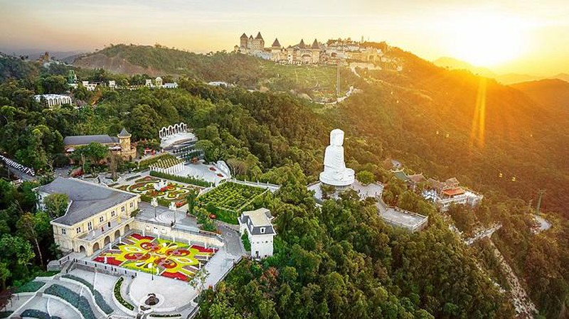
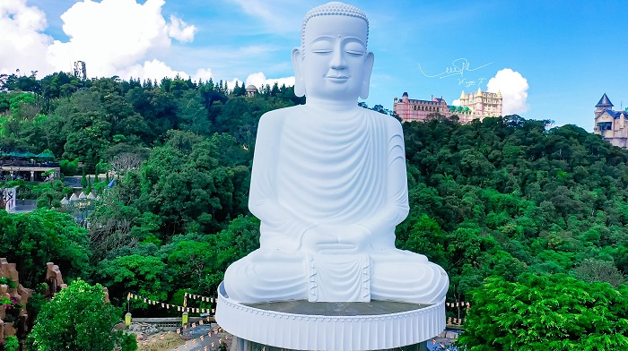

Chùa Linh Ứng Đà Nẵng là một trong những điểm đến du lịch tâm linh lý tưởng tại Đà Nẵng. Du khách đến đây có thể thư giãn, tìm về sự bình yên giữa chốn linh thiêng thanh tịnh. Hiện nay, Đà Nẵng có 3 ngôi chùa Linh Ứng với khung cảnh thiên nhiên tuyệt đẹp giúp du khách có thể thỏa sức khám phá.
Chùa Linh Ứng

1. Đà Nẵng có bao nhiêu chùa Linh Ứng?
Đà Nẵng có bao nhiêu chùa Linh Ứng là câu hỏi được nhiều du khách đặt ra khi đến với thành phố này. Thực tế, tại Đà Nẵng hiện nay có 3 ngôi chùa mang tên chùa Linh Ứng. Địa chỉ chùa Linh Ứng Đà Nẵng nằm tại các điểm như Ngũ Hành Sơn, Bà Nà – Núi Chùa và Bãi Bụt – Bán đảo Sơn Trà. Chùa Linh Ứng Đà Nẵng được xem là chốn linh thiêng bậc nhất tại đây, là nơi mọi người có thể đến và cầu nguyện cho một cuộc sống yên bình, hạnh phúc.
3 ngôi chùa Linh Ứng Đà Nẵng cụ thể có tên gọi như sau:
- Chùa Linh Ứng Bãi Bụt Đà Nẵng hay còn được gọi là chùa Linh Ứng Sơn Trà
- Chùa Linh Ứng Ngũ Hành Sơn Đà Nẵng hay còn được gọi là chùa Linh Ứng Non Nước/ chùa Ngoài
- Chùa Linh Ứng Bà Nà - Núi Chúa

2. Chùa Linh Ứng Sơn Trà – Nơi có tượng Phật Quan Âm cao nhất Việt Nam
Điều làm nên ấn tượng của điểm du lịch bán đảo Sơn Trà chùa Linh Ứng đó chính là tượng Phật Quan Âm cao nhất tại nước ta hiện nay. Đây là ngôi tượng được đặt trên ngọn đồi cao hơn 100m, đường kính tòa sen rộng tới 35m, đường kính lòng tượng rộng 17m và chiều cao tương đương 17 tầng. Mỗi tầng đều có bệ thờ tượng “Phật trung hữu Phật” với tổng cộng có khoảng 21 bức tượng. Chiều cao tổng thể của bức tượng này lên tới 67m.

Ngoài ra, phong cách kiến trúc độc đáo cũng làm nên điểm thú vị thu hút du khách của ngôi chùa này. Khung cảnh chùa Linh Ứng Đà Nẵng tại bán đảo Sơn Trà được nhiều du khách ví như một bức tranh tuyệt đẹp, nơi hài hòa giữa vẻ đẹp linh thiêng, tao nhã và sức hút của thiên nhiên, đất trời. Từ địa chỉ này, bạn cũng có thể dễ dàng tham quan nhiều điểm du lịch khác như: Bãi Bụt, đỉnh Bàn Cờ, cây đa ngàn năm tuổi, cãi đá Obama… Tham quan chùa Linh Ứng Đà Nẵng sẽ giúp cho hành trình của bạn trở nên thú vị và đầy trải nghiệm.
3. Chùa Linh Ứng Ngũ Hành Sơn – Ngôi chùa cổ nhất trong “Tam Linh Ứng Tự”
Chùa Linh Ứng Ngũ hành Sơn nằm trên ngọn núi Thủy Sơn – đây là ngọn núi đẹp và lớn nhất tại danh thắng Ngũ Hành Sơn Đà Nẵng. Đây là ngôi chùa cổ với vẻ đẹp hoài cổ, linh thiêng, nơi thu hút đông đảo du khách thập phương đến tham quan, chiêm bái hằng năm.

Cụ thể, kiến trúc bên ngoài thu hút bởi tượng Phật trắng muốt, uy nghiêm. Ngôi tượng này có chiều cao 10m. Bức tượng tựa lưng vào núi, hướng về phía chùa tạo nên sự tôn nghiêm. Ngoài ra, hệ thống cây cối, thiên nhiên bố trí xung quanh cũng giúp cho không gian bên ngoài trở nên thoáng mát, gần gũi hơn.
Bên cạnh đó, một trong những hình tượng nổi bật của chùa Linh Ứng Ngũ Hành Sơn Đà Nẵng đó chính là tháp Xá Lợi. Công trình này được xây dựng từ năm 1997. Chiều cao của tháp đạt 28m, bao gồm 7 tầng với 200 tượng Phật, Bồ Tát, La Hán được thờ phụng bên trong. Cho đến thời điểm hiện tại, đây cũng là công trình của Việt Nam thờ nhiều pho tượng bằng đá nhất.
3.Chùa Linh Ứng Bà Nà – Núi Chúa
Một trong những ngôi chùa Linh Ứng Đà Nẵng không kém phần nổi tiếng về cảnh quan và thiêng liêng đó chính là chùa Linh Ứng Bà Nà – Núi Chúa. Đây là điểm tham quan nằm trong quần thể du lịch Bà Nà Hills, du khách có thể tận mắt chứng kiến vẻ đẹp thơ mộng của điểm du lịch cao hơn 1500m so với mực nước biển.
Đây cũng là một trong ba “Linh ứng Tụ” được nhiều du khách biết đến tại Đà Nẵng và là 1 trong 2 “thế kiềng” tạo nên ba chân chống trụ cho Đà Nẵng.

Đến tham quan chùa Linh Ứng Bà Nà, bạn sẽ ngỡ ngàng trước bức tượng phật Thích Ca Mâu Ni – hay còn được gọi là tượng phật Đức Bổn Sư Thích Ca, người sáng lập nên đạo phật.

Bức tượng này có chiều cao 27m được làm hoàn toàn bằng đá trắng. Đường kính của tượng lên tới 14m. Tượng thiết kế với vị thế đang ngồi thiền định ở đài sen. Phía dưới là 8 bức phù điêu khắc mang nhiều ý nghĩa về cuộc đời của Đức Phật.